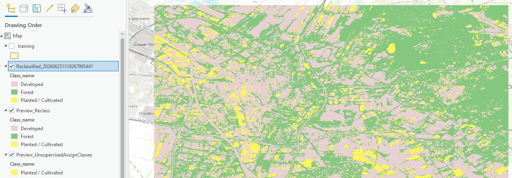
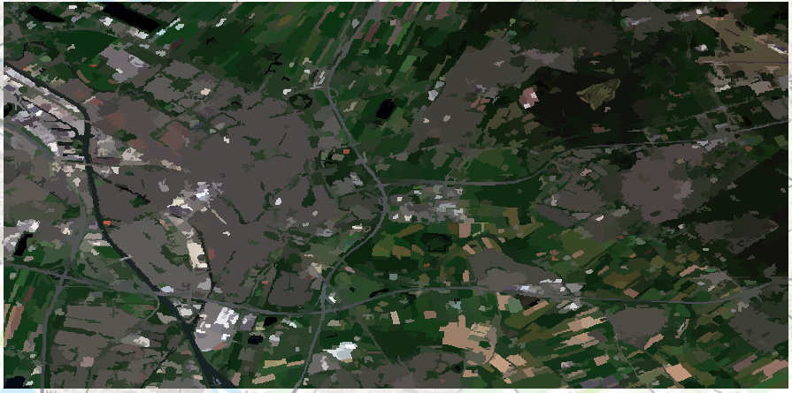
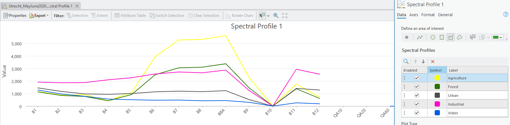
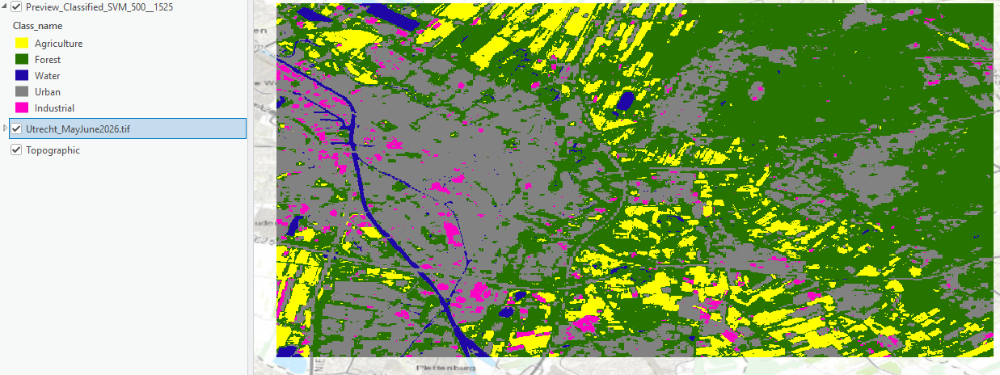

This project explores various alternatives for automated land use classification. Multispectral satelite data of Utrecht were analyzed using unsupervised and supervised classification.




Automated land use classification is a software technique where through analysis of multispectral data are the features of the surface divided into classes. The classes can be predetermined, such as urban, forest, herbaceous, barren and similar, but also other types of classes can be used depending on the recorded spectra. The land features are assigned to the respective class based on their spectral signature, therefore the only requirement to estabilish a class is to be able to measure a unique spectra of its objects. Land use classification has widespread application in digital terrain modeling, agriculture, urban development, nature conservation and geographical research, as it allows to model the real world using a discrete number of classes with certain properties.
Land use classification can be broadly divided into supervised and unsupervised. Supervised classification compares the spectra of the terrain to the spectra of known list of classes with sample spectra and assigns every part of the terrain one class from the list. This approach is suitable when we know beforehand what types of classes we want to monitor - for example the abovementioned division of land into urban, forest, herbaceous, and barren. A disadvantage of this approach is that if there is a unknown class present it will not show in the map and the parts of land with that class will be assigned to the class with the closest spectral signature, even if the class itself is radically different. An example of this would be having only herbaceous class, but in the target area there would be both monocultural fields and wild meadows - both would show as herbaceous on the map despite being very different. Unsupervised classifications groups together areas with similar spectral signatures and creates a new class for each group. Difficult part of unsupervised classification is defining what the classes represent and how to interpret them. Both types of classification can be applied as pixel-based or object-based. Pixel-based classification assigns class based on predominant spectra of each pixel, which might however lead to unnatural boundaries between differently classed areas or random small patches of different class in the middle of another. Object-based classification takes into consideration the spectra of the surrounding area, therefore producing smoother map with naturally looking segmentation.
In this project I classified a satellite image of Utrecht and the land east from it. The spatial resolution of the pixels was 18.5x30 meters. I defined 5 spectral classes - agriculture, forest, urban, water, industrial - and took samples of them to create a classification schema for supervised classification. Unsupervised pixel-based classification created only three classes, which cannot be interpreted very meaningfully. This is likely to the similarity between the spectra of urban and barren land. Unsupervised object-based classification created a similar looking map to the real color satellite image, which on one hand shows relatively high accuracy indetermining the objects, but on the other hand makes it difficult to interpret and use due to the sheer number of classes. Supervised pixel-based classification using schema I made performed well and created a believable map of the area with classes assigned. This map can be used for example to calculate the ratio of forested to unforested land or see the proportion of urbanized area. One such use would be displaying the health of the vegetation based on Normalized Vegetation Difference Index (NDVI). By basing the classes on the result of formula used for NDVI calculation, we can show which the health of plants in different areas. Due to technical difficulties and time constrains I was unable to create this map, but if I did, I would create a scheme with for classes based on NDVI vaules. The first class would be for values from -1 to 0 and represent the non-vegetation area, to which I would assign grey color on the map. Other 3 classes would represent low, moderate, and high plant health and represent NDVI values between 0 and 0.33, 0.34 and 0.66, 0.67 and 1 respectivelly. These classes would be visualized as progressively darker shades of green, as green is a color commonly used to visualize plants or positive phenomena.
To test accuracy of automated classification, a comparison with real world data can be made using so called confusion matrix. A confusion matrix is a table where rows represent the classes and columns the real world classified data. By calculating the producer and user accuracy, we can determine the reliability of our classification. Producer accuracy refers to the probability that the real feature was correctly classified in the map, while user accuracy is the probability that a pixel classified on the map represents that class in the real world. These accuracies are influenced by producer error (errors in real world mapping) and user error (errors in the assignment of the correct class). As I did not have working real world data available, I was unable to create a confusion matrix to test for my classification accuracy.